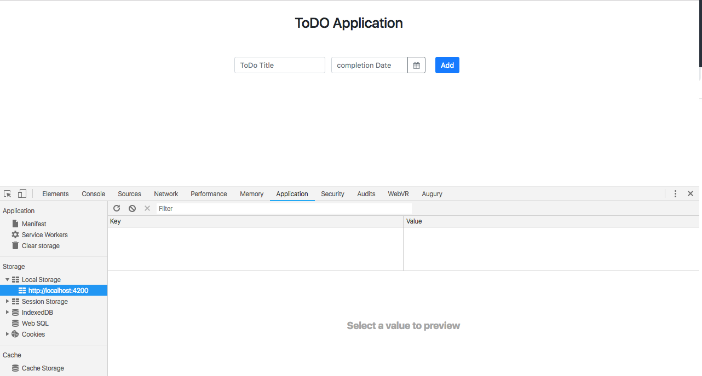

Kemampuan Akhir Yang Direncanakan
- Peserta mampu membuat method toggle
Percobaan membuat method CompleteTodo
- buka file todo-data.service.ts tambahkan method CompleteTodo
compoleteTodo(todo:Todo){
const updateTodo= this.updateTodo(todo.id,{
complete:!todo.complete
});
return updateTodo;
}
- buka file app.component.html tambahkan function click dan method completeTodo dengan parameter todo
<button class="btn btn-success"(click)="completeTodo(todo)"><i class="fa fa-check"></i></button>
- buka file app.components.ts tambahkan method completeTodo
completeTodo(todo){
this.todoService.compoleteTodo(todo);
}
- untuk keseluruhan code nya pada file app.components.ts sebagai berikut
import { Component } from '@angular/core';
import { Todo } from './class/todo';
import { TodoDataService } from './services/todo-data.service';
@Component({
selector: 'app-root',
templateUrl: './app.component.html',
styleUrls: ['./app.component.css']
})
export class AppComponent {
newTodo:Todo=new Todo();
constructor( private todoService:TodoDataService){}
get todos(){
return this.todoService.getAllTodos();
}
addTodo(){
// console.log(this.newTodo);
if(this.newTodo.title && this.newTodo.date){
this.todoService.addTodos(this.newTodo);
//cek isi new todo apakah berhasil
// console.log(this.newTodo);
this.newTodo.title='';
this.newTodo.date='';
}
}
completeTodo(todo){
this.todoService.compoleteTodo(todo);
}
}
jika berhasil maka saat button success di klik maka status akan berubah seperti gambar berikut
langkah berikutnya buka file app.component.html tambahkan todo.id
<tr *ngFor="let todo of todos">
<td>{{todo.id}}</td>
<td>{{todo.title}}</td>
<td>{{todo.date.day}}-{{todo.date.month}}-{{todo.date.year}}</td>
- buka file todo-data.service.ts tambahkan code berikut di constuctor
constructor() {
const todos=this.getAllTodos();
if (todos.length===0){
this.lastid=0;
}else {
const maxId= todos[todos.length-1].id;
this.lastid = maxId+1;
}
}
- jadi keseluruhan code pada todo-data.service.ts sebagai berikut :
import { Injectable } from "@angular/core";
import { Todo } from "../class/todo";
@Injectable({
providedIn: "root"
})
export class TodoDataService {
lastid = 0;
todos: Todo[] = [];
constructor() {
const todos=this.getAllTodos();
if (todos.length===0){
this.lastid=0;
}else {
const maxId= todos[todos.length-1].id;
this.lastid = maxId+1;
}
}
addTodos(todo: Todo): TodoDataService {
if (!todo.id) {
todo.id = ++this.lastid;
}
const todos = this.getAllTodos();
todos.push(todo);
//add code
this.setTodo(todos);
return this;
}
getAllTodos() {
const storageItem = JSON.parse(window.localStorage.getItem("app-todos"));
if (storageItem === null) {
return [];
} else {
return storageItem.todos;
}
}
getTodoById(id:number):Todo{
const todos=this.getAllTodos();
return todos.filter(todo=>todo.id===id).pop();
}
updateTodo(id:number,values:Object={}){
const todo=this.getTodoById(id);
if(!todo){
return null;
}
let todos = this.getAllTodos();
todos = todos.filter(t=>t.id !== todo.id);
const todoValues= Object.assign(todo,values);
todos.push(todoValues);
this.setTodo(todos);
}
compoleteTodo(todo:Todo){
const updateTodo= this.updateTodo(todo.id,{
complete:!todo.complete
});
return updateTodo;
}
setTodo(usertodos: Todo[]) {
window.localStorage.setItem(
"app-todos",
JSON.stringify({ todos: usertodos })
);
}
}
jalan aplikasi dan amati id nya jika kita lihat pada saat nambah idnya tetap

buka file app.component.ts tambahkan code this.newTodo=new Todo() pada method addTodo()
addTodo(){
// console.log(this.newTodo);
if(this.newTodo.title && this.newTodo.date){
this.todoService.addTodos(this.newTodo);
//cek isi new todo apakah berhasil
// console.log(this.newTodo);
this.newTodo= new Todo();
this.newTodo.title='';
this.newTodo.date='';
}
}
clear local storage pada tab application 
tambahkan beberapa data, jika benar maka id akan bertambah dan hasilnya seperti pada gambar berikut

jika kita klik button succes maka status akan berubah seperti sebelumnya seperti pada gambar berikut
buat kondisi dimana jika status sudah complete maka button akan disable
- buka file app.component.html tambahkan [disabled]
<button class="btn btn-success"(click)="completeTodo(todo)" [disabled]="todo.complete"><i class="fa fa-check"></i></button>
jika benar maka data yang berstatus complete akan disabled button successnya seperti pada gambar berikut

jika id berhasil bertambah maka hapus pada file app.component.html dan hasilnya akan seperti gambar berikut